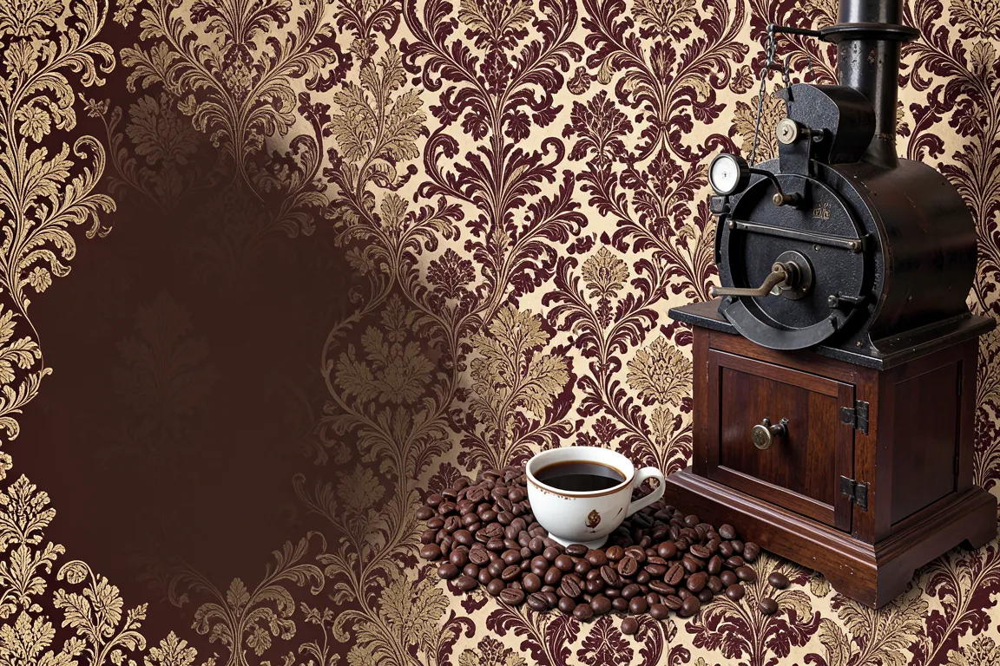

Tett ornamentikk, graverte kanter, høykontrast serifskrift, dype juvelfarger, gull, mørkt tre og gammelt papir. Den minner om 1800-tallet og gir en side en stolt, samlet og gotisk stemning.

Kjerneidé
Ornamentet er verdi: hver flate bærer mønster, linje og snirkel.
Designprinsipper
Ramm inn hver side med en dobbel kant: linjer på 1px og 3px med 3px til 4px mellomrom i mørkt blekk eller gull.
Bruk ornamentale hjørner og skillelinjer (en snirkel eller en fleuron) på 24px til 64px ved hvert seksjonsskifte.
Sett overskrifter i en høykontrast serif (didone eller old style) på 48px til 96px med versaler eller kapitéler; brødtekst på 17px til 19px med linjeavstand 1.6.
Bygg paletten av dype juveltoner (burgunder, flaskegrønn, marineblå) med gull (#B8860B) som aksent på pergament (#F1E5C8) eller mørk bunn.
Fyll bakgrunner med damask- eller tapetmønstre med 6 % til 12 % dekkevne og en repetisjon på 80px til 160px.
Bruk initialer på 3 til 4 linjer i første avsnitt og en gull- eller rød initial.
Legg til illustrasjoner i gravørstil med skravurlinjer på 0.5px til 1px; ingen flat vektor.